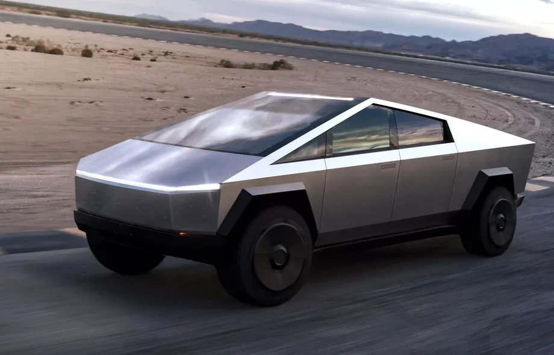
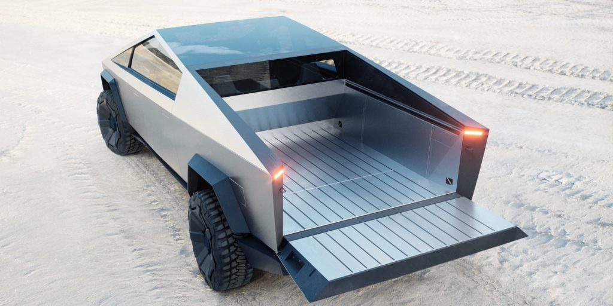
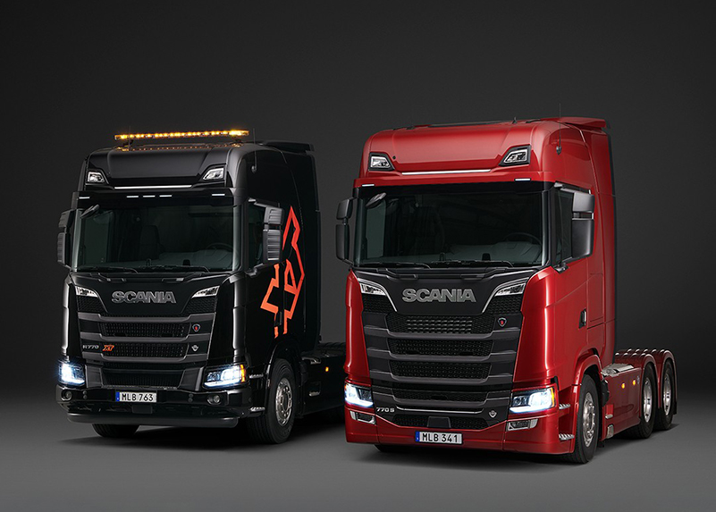
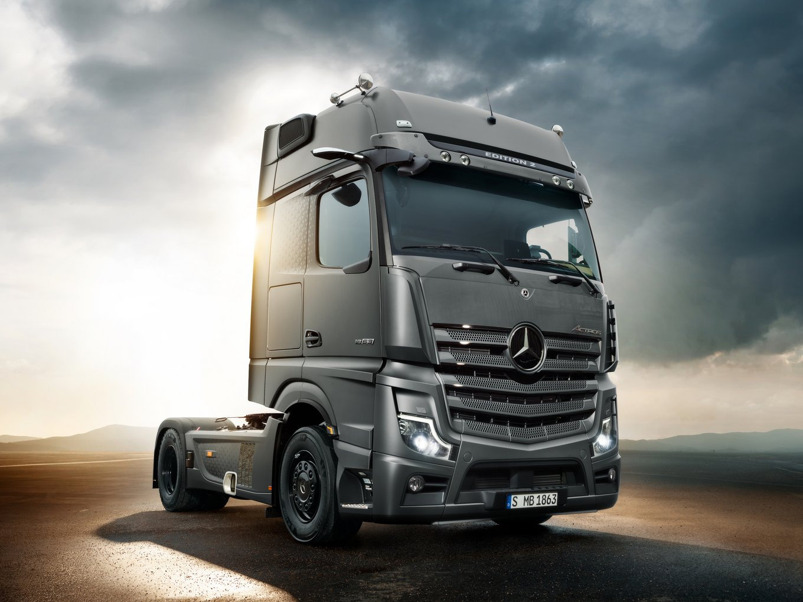
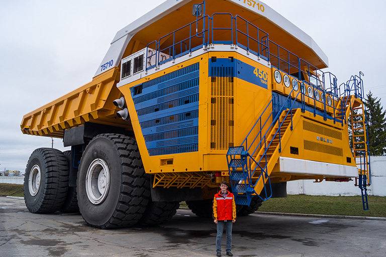
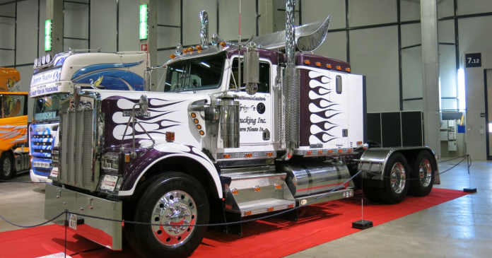
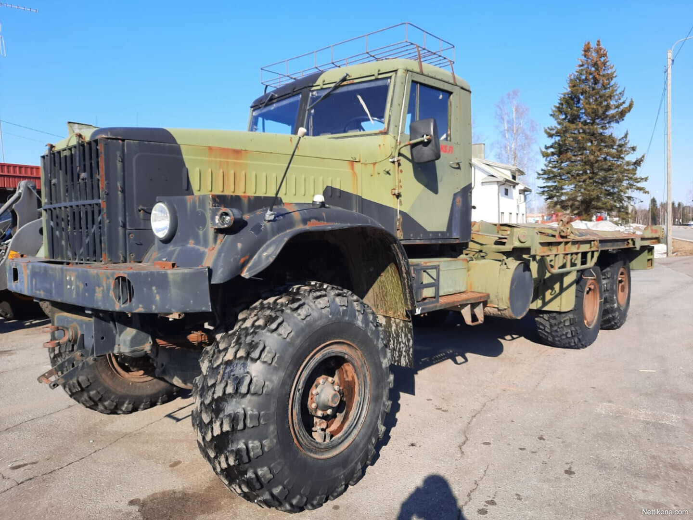

Kuvassa ensimmäinen kuorma-auto vuodelta 1896 joka on muunneltu hevoskärryistä
Mitä ovat kuorma-autot?
Kuorma-auto on moottoriajoneuvo, joka on suunniteltu tavaroiden kuljettamiseen.
Ne ovat tärkeä osa kuljetusalaa ja logistiikkaa.
- Kuorma-autot voivat kuljettaa suuria määriä tavaroita ja kuormia.
- Ne voivat olla eri kokoisia ja muotoisia riippuen käyttötarkoituksesta.
- Yleisiä kuorma-auton valmistajia ovat Volvo, Scania, Mercedes-Benz jne.
Kuorma-autot kategorioiden mukaan
- Kuorma-autot voidaan luokitella eri kategorioiden mukaan, kuten kuorma-autot, trukit, pakettiautot jne.
- Eri maissa voi olla erilaisia sääntöjä ja määräyksiä kuorma-autoille.
- Jakeluautot (Pakettiautot): Jakeluautot ovat pieniä kuorma-autoja, jotka on suunniteltu tavaroiden toimittamiseen kaupungeissa ja lyhyillä etäisyyksillä.
Ne ovat yleensä kevyitä ja niillä on pieni kuormatila. Jakeluautot ovat yleisiä esimerkiksi postinkuljetuksessa ja elintarvikejakelussa.
- Keskikokoiset kuorma-autot: Keskikokoiset kuorma-autot ovat suurempia kuin jakeluautot, mutta pienempiä kuin raskaat kuorma-autot.
Ne soveltuvat monenlaiseen kuljetukseen, mukaan lukien tavaroiden toimitukset, rakennusmateriaalien kuljetus ja muu monipuolinen käyttö.
- Raskaat kuorma-autot: Raskaat kuorma-autot ovat suuria ja vahvoja ajoneuvoja, jotka on suunniteltu kuljettamaan suuria määriä tavaroita pitkillä matkoilla.
Niitä käytetään usein kuljetus- ja logistiikkayrityksissä sekä teollisuudessa.
Tavallisesti niissä on suuri kuormatila ja ne voivat olla varustettu erilaisilla erikoisosilla, kuten jäähdytysjärjestelmillä tai nostureilla.
- Puoliperävaunu- ja täysperävaunuautot: Nämä kuorma-autot ovat yleisesti käytettyjä pitkän matkan kuljetuksessa. Ne koostuvat vetoautosta ja perävaunusta, joka voi olla puoliperävaunu tai täysperävaunu.
Nämä voivat kuljettaa suuria kuormia, mukaan lukien kontteja ja bulkkitavaroita.
- Erikoiskuorma-autot: Näihin kuuluvat erikoisesti suunnitellut kuorma-autot, jotka on tarkoitettu tiettyyn käyttötarkoitukseen, kuten betoniautojen kuljetukseen, jätehuoltoon, metsäkuljetuksiin tai maansiirtoon.
Niiden rakenne ja varusteet vaihtelevat suuresti käytön mukaan.
- Jäteautot: Nämä kuorma-autot on suunniteltu jätehuoltoon ja jätekeräykseen.
Niissä voi olla erilaisia mekanismeja jätemateriaalien keräämiseen ja käsittelyyn.
- Erityisajoneuvot: Tähän kategoriaan kuuluvat erityiset kuorma-autot, kuten paloautot, pelastusajoneuvot ja sotilasajoneuvot, jotka on suunniteltu erityistehtäviin.
Kuorma-autot ja ympäristö
Kuorma-autot voivat aiheuttaa ympäristöhaittoja, kuten ilmansaasteita ja kasvihuonekaasupäästöjä.
Siksi kehitetään yhä ympäristöystävällisempiä vaihtoehtoja, kuten sähkökäyttöisiä kuorma-autoja.
Kuvia







EU VS USA
Jenkki- ja EU-kuorma-autot eroavat toisistaan useilla tavoilla, mukaan lukien tekniset erot ja ulkonäkö.
Tässä on joitakin merkittäviä eroja
- Koko ja pituus:
Jenkki-kuorma-autot ovat usein huomattavasti suurempia ja pidempiä kuin EU-kuorma-autot.
Yksi syy tähän on erilainen tieliikennelainsäädäntö: Yhdysvalloissa tiellä on yleensä enemmän tilaa, ja suurempien ajoneuvojen käyttö on sallittua.
- Akselit: Jenkki-kuorma-autoissa on yleensä enemmän akselia kuin EU-kuorma-autoissa.
Tämä voi johtua erilaisista kuormausvaatimuksista ja teiden kuntoon liittyvistä eroista.
- Ohjaamon muoto: "Nuppi" tai ohjaamojen muoto eroaa merkittävästi. Jenkki-kuorma-autoissa on usein pitkä ja litteä ohjaamo, joka on erillään perävaunusta (näin kutsutaan "unibody").
EU-kuorma-autoissa ohjaamo on yleensä integroitu osaksi kuormatilaa (näin kutsutaan "kaikki yhdessä" -rakenteeksi).
- Tekniset erot: Teknisissä erossa on eroja, mukaan lukien moottoriteho, päästötandardit ja voimansiirto.
Jenkki-kuorma-autot noudattavat yleensä Pohjois-Amerikan päästönormeja, kun taas EU-kuorma-autot noudattavat eurooppalaisia päästöstandardeja.
- Polttoaine: Jenkki-kuorma-autot käyttävät yleensä dieselmoottoreita, kun taas EU-kuorma-autoissa on monipuolisempia vaihtoehtoja, kuten diesel, kaasu ja sähkö.